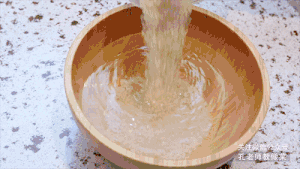

Main Ingredients
2 cup Thai rice 1.5 cup water 2 oz carrot 2 oz peas 5 oz char siu (You can use ham or spam if you can't get char siu.) 4 oz shrimp 2 egg 2 scallion Flavors 0.50 tsp salt 2 tbsp light soy sauce 2 tbsp oil Cooking Ingredients 2 cup water 1 tbsp oil 0.50 tsp salt
